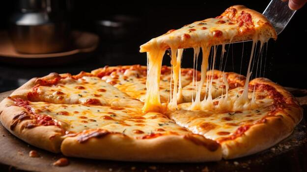

Click here to go back to the main recipe page.
Cheese Pizza

Description
Pizza is an Italian dish typically consisting of a flat base of leavened wheat-based dough topped with tomato,
cheese, and other ingredients, baked at a high temperature, traditionally in a wood-fired oven.
Pizza and its variants are among the most popular foods in the world. Pizza is sold at a variety of restaurants, including pizzerias,
Mediterranean restaurants, via delivery, and as street food. In Italy, pizza served in a restaurant is presented unsliced, and is
eaten with the use of a knife and fork. In casual settings, however, it is typically cut into slices to be eaten while held in the hand.
Pizza is also sold in grocery stores in a variety of forms, including frozen or as kits for self-assembly.
Store-bought pizzas are then cooked using a home oven.
Toppings can be added at your own discretion and will not necessarily impact the recipe
Source (Wikipedia)
Ingredients
- 2 Cups Flour, divided
- 3/4 Cup lukewarm water
- 1 Teaspoon active dry yeast
- 1/4 Teaspoon sugar
- 1/2 Teaspoon salt
- 1 Tablespoons olive oil optional
- 120 Milliliters tomato sauce
- 200 Grams shredded cheese
All of these ingredients are necessary to an extent, many can be replaced with various other options. Many are also intentionally
left broad for the cooks discretion. It is recommended that beginners follow the recipe more tightly however.
Many measurements are also up for the cooks discretion the previous is just a rough estimate for this recipe.
Recipe Steps
Disclaimer: Ensure you possess the proper cooking pots and utensils before proceeding with a recipe. This greatly affects the recipe result.
- In a bowl, combine warm water, sugar (optional), and active dry yeast. Let it sit for about 5-10 minutes
until it looks foamy on top; this means the yeast is alive and active.
- Add flour, salt, and olive oil (optional) to the bowl. Mix until it forms a rough, shaggy dough.
- Knead the dough on a lightly floured surface for about 8-10 minutes, until it feels smooth and stretchy.
- Place the dough in a lightly oiled bowl, cover it, and let it rise in a warm spot for about 1-1.5 hours, or until it has roughly doubled in size.
- 'Punch' the dough down to release the air, then stretch or roll it out into a pizza shape on a baking sheet or pizza stone.
- Spread a thin layer of tomato sauce evenly over the dough, leaving a small border around the edges for the crust.
- Sprinkle cheese evenly over the sauce, covering as much as you'd like.
- Bake in a preheated oven at 475°F (245°C) for about 10-15 minutes, until the crust is golden and the cheese is melted and bubbly.
- Let the pizza cool for a minute or two before slicing and serving.
Sugar is food for the yeast, it gives the yeast a quick energy source to start producing carbon dioxide faster, which speeds up the rising process.
However, yeast can also feed on the natural sugars already present in flour, so the dough will still rise without added sugar; it just takes a bit longer.
Sugar also adds a very mild sweetness and helps the crust brown more evenly in the oven, but it is not essential for a finished pizza.
Olive oil makes the dough softer, more pliable, and adds flavor to the crust. It also helps create a slightly crispier exterior when baked.
However, traditional Neapolitan-style pizza dough is made without any oil at all and still turns out beautifully.
The dough will hold together and bake properly without it, you'll just get a slightly chewier, less rich crust.